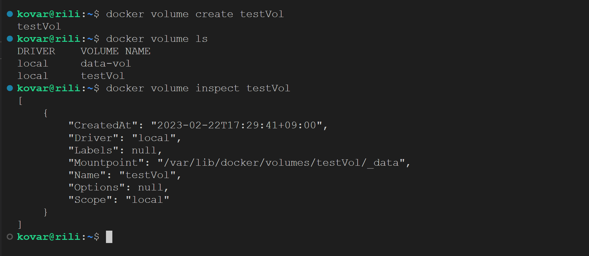
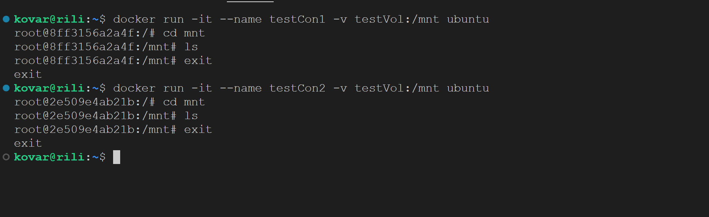
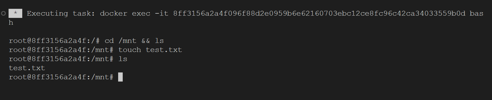
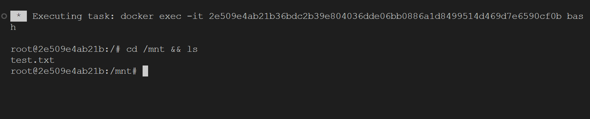

도커를 열심히 쓰다보면, 그 놀라운 편의성에 놀라다가도 항상 거슬리는 것이 하나 있는데, 바로 컨테이너를 제거해버리면 컨테이너 내에서 했던 모든 작업들까지 같이 날라가 버린다는 것이다…
이럴 때 컨테이너의 특정 부분에 해당하는 자료만 보존하고, 또 컨테이너끼리 동기화하는 방법이 있는데, 그것이 바로 도커의 볼륨 기능이다.
II. 볼륨을 직접 활용해보자!
그럼 실제로 도커에서 볼륨을 만들고, 이를 컨테이너와 연결시켜 볼륨을 활용해보자! (
이하 작업들은 Ubuntu OS의 Bash쉘을 활용해 진행하였으며, 돈이 부족해 아직 리눅스 머신을 구비하지 못한 관계로ssh를 활용해 원격으로 GPU머신에 접속해 작업했음을 미리 밝힌다.
1. 볼륨 만들기
먼저 볼륨부터 만들어보자.
## 도커 볼륨을 만든다.$ docker volume create [볼륨이름]## 생성된 볼륨들의 목록을 출력한다.$ docker volume ls
## 만든 볼륨을 살펴본다.$ docker volume inspect [볼륨이름]

docker volume inspect [볼륨이름] 명령어를 통해 살펴본 결과, 도커의 볼륨은 "var/lib/docker/volumes/[볼륨명]/_data"경로에 저장되는 것을 확인할 수 있었다.
참고로, 이 글
에 따르면, 볼륨이 저장되는 위치만 따로 설정할 수 있다고 한다! 도커 및 주요 파일들이 들어있는 메인 SSD 용량이 부족할 때 활용하면 좋을 것 같다!
2. 볼륨을 활용하는 컨테이너 만들기
다음으로 이미 생성한 볼륨을 활용하는(마운트하는) 컨테이너를 만들어보자.
## 볼륨을 마운트한 컨테이너 만들기docker run -it --name [컨테이너명] -v [볼륨명]:[컨테이너 내에서 마운트할 경로]

나의 경우, testCon1, testCon2라는 컨테이너들을 만들어두었고, ls 명령어의 결과물이 아무것도 없는 것으로 볼 때, 각각의 /mnt 경로 속에는 어떠한 파일도 들어있지 않음을 확인할 수 있다.
3. 볼륨 활용해보기
이제 본격적으로 볼륨을 활용해보자.
여기서 재밌는 것은 도커의 볼륨 파일을 넣거나 지울수는 없다는 것이다.
바꿔 말하면, 볼륨은 컨테이너와 연결해야지만 손볼 수 있다는 것이다!
따라서 특정 볼륨에 파일을 만들거나 복사하는 등의 작업을 하려면, 해당 볼륨이 마운트된 컨테이너에서 작업하면 된다!
이렇게 해당 컨테이너 내부에서 볼륨이 마운트된 경로로 들어가 작업을 진행하게 되면, 해당 작업은 볼륨이 마운트된 다른 모든 컨테이너에도 적용된다!!!
볼륨을 사용하는 상황을 고려할 때, 보통은 로컬에서 도커 컨테이너로 파일(특히 데이터셋이나 코드 등)을 복사하는 경우가 많을 테지만, 이번 글에서는 간단하게 파일을 만드는 작업을 진행해보자.
## vscode Docker Extension을 활용해, testCon1을 터미널창에 Attach Shell한 상태로 작업을 진행한다!## 당장 /mnt의 폴더 안에는 아무것도 없지만,cd /mnt && ls
## touch명령어를 활용해 빈 파일을 만든 뒤,touch test.txt
## 다시 ls 명령어를 통해 살펴보면, /mnt에 test. txt 파일이 생성된 것을 확인할 수 있다.ls

그 후, 볼륨이 마운트 된 또 다른 컨테이너에 접속해보면 해당 파일이 동기화된 것을 확인할 수 있다!
## 이번에는 testCon2를 터미널창에 Attach Shell한 상태로 작업을 진행한다!cd /mnt && ls

III. 볼륨은 클라우드 스토리지 서비스와 같다!
이상의 실습을 진행하고 느낀 점은, 도커의 볼륨은 클라우드 스토리지 서비스(특히 원드라이브)와 굉장히 유사하다는 것이다!
내가 애용하는 원드라이브를 예로 들어 좀 더 자세히 설명하자면,
원드라이브를 로컬 환경에서 마운트하면, 해당 로컬 경로에서 진행한 작업들은 원드라이브 클라우드는 물론이고, 해당 원드라이브를 마운트한 다른 컴퓨터들 모두에서 동기화가 이뤄진다!
나아가 자주 사용하는 파일들은 매번 클라우드 스토리지에서 다운 받는 것이 아니라, 아예 로컬 환경에 다운받아두고 그만큼 로컬 환경의 용량을 차지하는데, 이 부분이 도커의 볼륨이 실제로 로컬 환경의 용량을 차지하는 것과 굉장히 유사했다!
결국 볼륨 기능은 1) 동기화가 용이하며, 2) 로컬 용량을 차지한다는 두 가지 키워드를 가지고 이해하면 좀 더 쉽게 활용할 수 있을 것 같다!
나아가 나처럼 원드라이브를 애용한다면, 도커의 볼륨 기능은 원드라이브의 작동 방식과 거의 유사하니 더욱 쉽게 이해할 수 있으리라 믿는다!